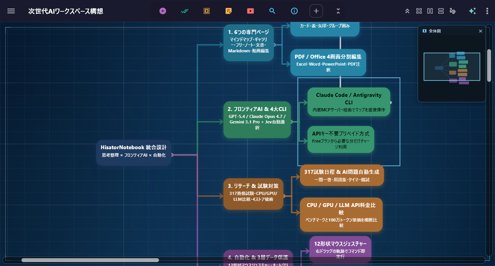
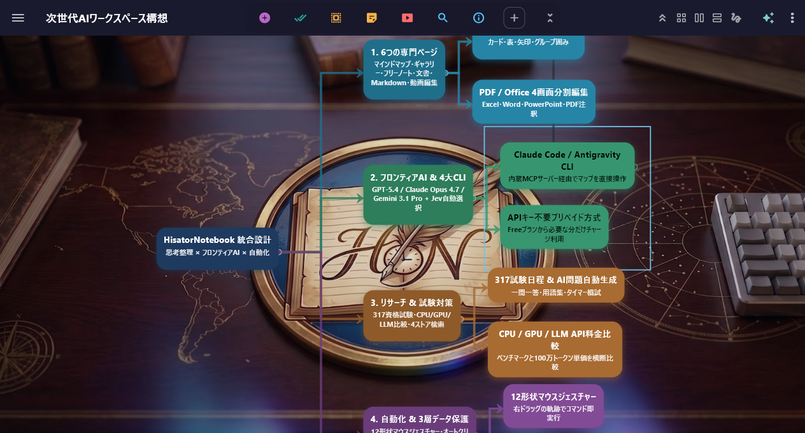
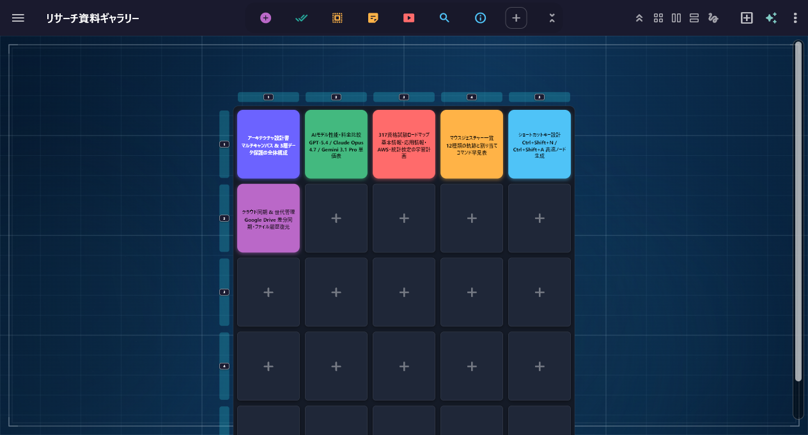
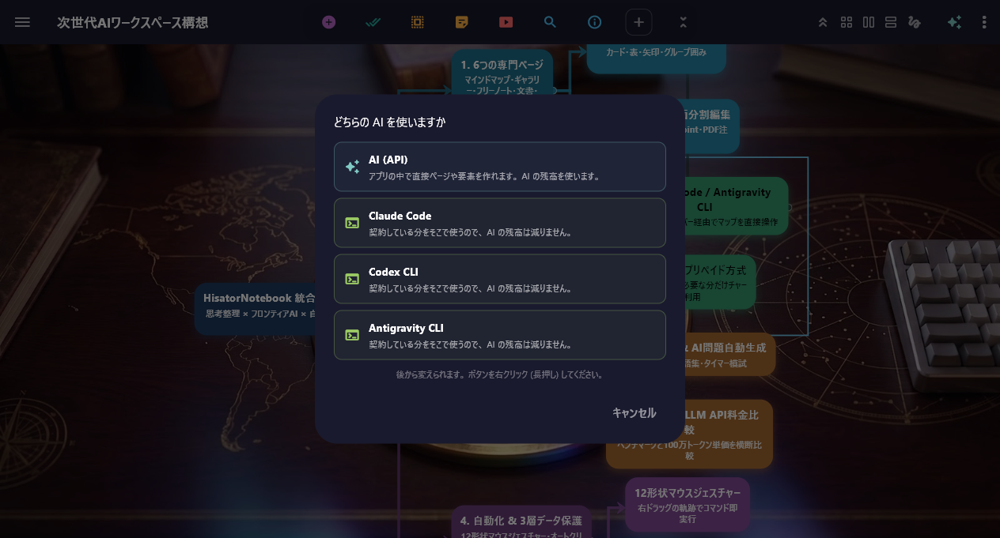
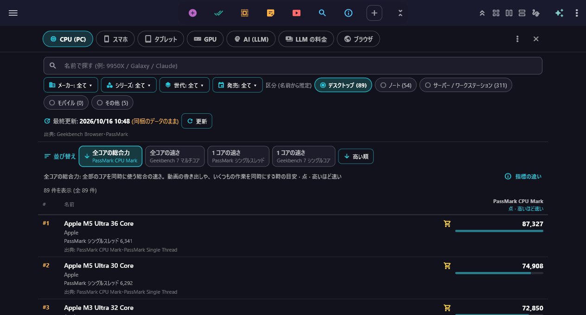
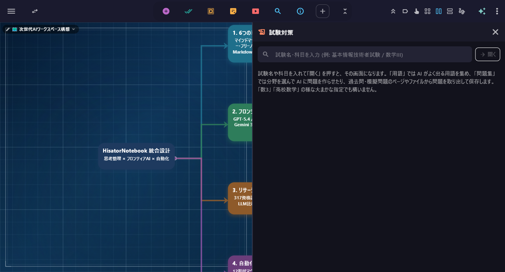
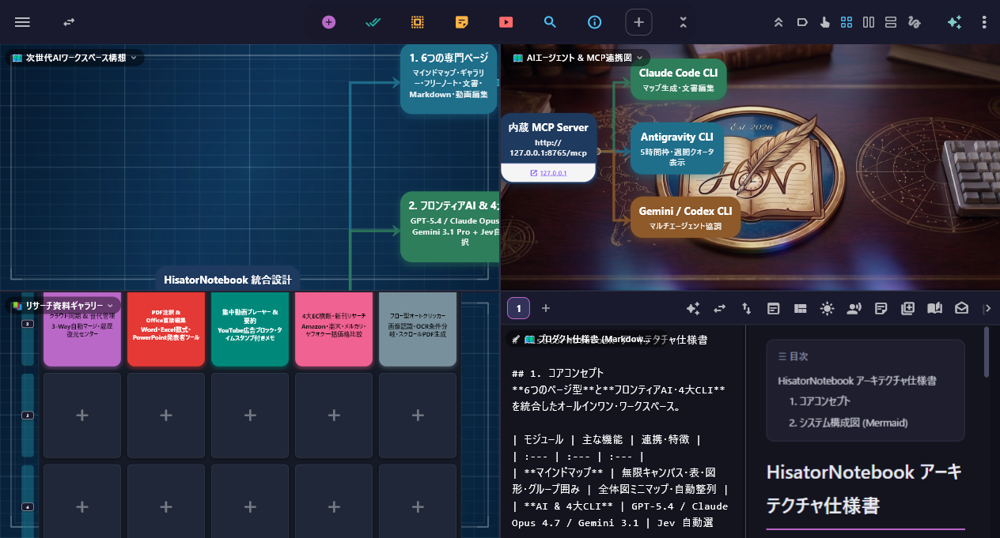

Mais fácil de usar do que qualquer outro
O NoteBook definitivo
— HisatorNotebook for Windows & Android
Mapa mental, notas, PDF, Office, vídeo e IA integrados em um só lugar
Um espaço de trabalho completo e intuitivo que acelera o seu raciocínio
Windows 10 / 11 (64 bits) · Android 8.0 ou superior · Interface em 30 idiomas
Uso intuitivo!
Alterne livremente entre 6 tipos de página
Enter cria um nó irmão, Tab um nó filho e Space entra na edição
Expanda a árvore na velocidade do pensamento e alterne entre os 6 tipos de página quando quiser

Nós hierárquicos + minimapa de visão geral: veja o todo num relance

Alinhamento automático e molduras de grupo para estruturar suas ideias com elegância

Organize visualmente materiais, imagens e vídeos em uma grade 2D
Do mapa para a Galeria e a tela dividida em 4, sem interrupções
Conexão imediata com as 3 grandes IAs
E as 3 grandes CLIs de IA integradas
Use ChatGPT, Gemini e Claude na hora, sem chave de API
Inicie também Claude Code / Codex / Antigravity CLI direto do app

Alterne com um clique entre a IA embutida (API) e as 3 grandes CLIs de IA que você já assina
Pesquise, compare, aprenda
Um hub de informações completo, sem sair do app

Compare desempenho e preço de CPU, GPU, celulares e LLMs de uma só vez

Datas de 317 exames de certificação + painel de IA “Preparação para exames”
Vídeo contínuo: da tela dividida em 4 à pesquisa e à Preparação para exames
Escreva direto no PDF
E edite Word, Excel e PPT diretamente
Salve anotações a caneta no PDF e edite Office e Markdown sem programas externos
Transforme documentos longos e PDFs diretamente em mapas mentais estruturados
Chega de distrações
Estudo com vídeos sem anúncios e reprodução de mídia
Assista a playlists e canais do YouTube sem anúncios, com total foco
Da edição de vídeo em linha do tempo à organização na Galeria, tudo em uma só tela
Um traço com o botão direito, e pronto
Tela dividida e automação de tarefas
Gestos do mouse com 12 formas: segure o botão direito e desenhe o traço
Tela dividida em 2 ou 4 à vontade e um Auto clicker que encadeia cartões

4 páginas especializadas lado a lado em uma só janela (troque arrastando ou transforme em minijanela)
3 planos
Os 6 tipos de página, a edição de PDF/Office, a pesquisa e a IA (pré-paga) podem ser usados de graça, para sempre, já no plano Free (¥0)
Free
- Crie quantas páginas quiser (abre as 2 primeiras da lista; reordene à vontade)
- 6 tipos de página · escrita direta no PDF · edição de formatos Office
- Busca · Tendências · Curiosidades · Comparar desempenho · preparação para 317 exames · busca de produtos
- Gestos do mouse · YouTube sem anúncios · Câmera silenciosa
- IA pré-paga e 3 grandes CLIs de IA · sincronização na nuvem
Pro
★ Desconto anual de 20% aplicado- Sem limite de páginas abertas (ilimitado)
- Tela dividida em 2 e em 4 e Bloqueio de foco ilimitados
- Automação web · PDF com encadernação à direita via rolagem automática
- Multimonitor: salto do cursor sempre ativo (Windows)
- Armazenamento local-first · IA pré-paga e 3 grandes CLIs
Max
★ Desconto anual de 20% aplicado- Todos os recursos do Pro
- Sincronização na nuvem (mesclagem automática · 25 GB de upload / 100 GB de download por mês)
- Coedição em tempo real com código de convite
- Links de publicação na web para páginas Markdown
- Geração automática de mapas com IA a partir de PDFs e documentos Office